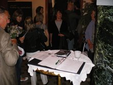

|
|
دفاع از حقوق زنان ایران در جشنواره تئاتر سوئد
شنبه11 خرداد 1387
سوئد- تئاتر سراسری سوئد Riksteatern با انتشار اطلاعیهای اعلام کرده است همراه با تئاتر اُستْیوتا Östgötateatern، در روزهای ۲۵ و ۲۶ ماه مه، همزمان با برگزاری جشنوارهی تئاتر، در حمایت از ژورنالیست و فعال حقوق شهروندی، پروین اردلان به جمعآوری امضاء خواهد پرداخت.
این فستیوال موفقیتهای سالهای اخیر و نیز بازیابی و کشف دوبارهي برخی نمایشنامههای سالهای ۱۸۰۰ میلادی، از جمله "نجات یافته" نوشتهی الفیلد آگْرِلْس و "خوشبختی خانوادهگی" نوشتهی آنشارلوت لِفْلِر را جشن میگیرد.

در بخشی از این بیانیه از قول بیرگیتا انگلین، مدیر اجرائی تئاتر سراسری سوئد آمده است:
هنگامی که الفیلد آگْرِلْس و آنشارلوت لِفْلِر در سال ۱۸۸۰ نمایشنامههای خود را مینوشتند از حق رأی محروم بودند و حقوق و آزادیهای دمکراتیک آنان نفی میشد. متاسفانه شرایط برای ملیونها زن همچنان به همانگونه است. پروین اردلان یکی از آنهاست.
در بیانیه به مسألهی جلوگیری از خروج وی از کشور و نیز حکم سه سال زندان تعلیقی او به جرم اقدام علیه امنیت کشور اشاره شده و آمده است که شرکت کنندگان در این جشنواره میتوانند با امضاء طوماری که برای سفارت ایران در استکهلم ارسال خواهد شد، اعتراض خود را به نحوهی برخورد دولت ایران با اردلان ابراز نمایند